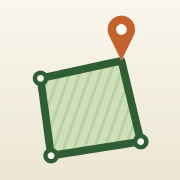

AcreMarkPrivacy Policy
Effective November 11, 2026
Short version: AcreMark has no account, no analytics and no ads, and we (the developer) collect no personal data. Your locations and saved plots stay on your device. The map itself is provided by Google, and Google receives some technical data to provide it (details below).
What we collect
Nothing. We don't run servers for this app, and the app contains no analytics, advertising, tracking or crash-reporting code of our own. We can't see your measurements, your location or how you use the app.
Location
AcreMark uses your device's location only to:
- show your position on the map,
- help you draw measurements, and
- record a boundary while you walk it in Walk mode.
Location is processed on your device and is never sent to us. The app asks for "While Using" access. It asks for "Always" access only if you start a Pro walk recording that continues with the screen locked, and only for the length of that recording. You can change this at any time in iOS Settings → Privacy & Security → Location Services → AcreMark.
Your saved plots
Plots, notes, drawings in progress and settings are stored only on your device. They leave your device only when you choose to share an export (PDF, KML, GeoJSON) or a backup file, and they go wherever you send them. Deleting the app deletes this data.
Purchases
AcreMark Pro is purchased through Apple's App Store. Apple processes the payment; we never receive your payment details or Apple ID. The app keeps a note on your device that Pro is unlocked.
Third-party services
Google Maps
The satellite map is provided by the Google Maps SDK for iOS. To show map imagery, your device requests map tiles for the area you're viewing directly from Google. Google receives your IP address and the area being displayed, and according to Google's SDK privacy manifest, the SDK also sends Google diagnostics (crash and performance data), product-interaction data, a device identifier and other technical data for Google's own analytics. This data isn't used for tracking or advertising, and it isn't shared with us. Google's handling of it is covered by the Google Privacy Policy and the Google Maps Platform Terms.
Place search
When you type a place into search, the text is sent to your device's built-in geocoding service (Apple on iPhone, Google on Android) to find it. See the Apple Privacy Policy.
Children
AcreMark is a general-audience utility. It doesn't knowingly collect any data from anyone, including children.
Changes
If this policy changes, the updated version will be posted on this page with a new effective date.
Contact
Questions about privacy: acremarksupport@gmail.com